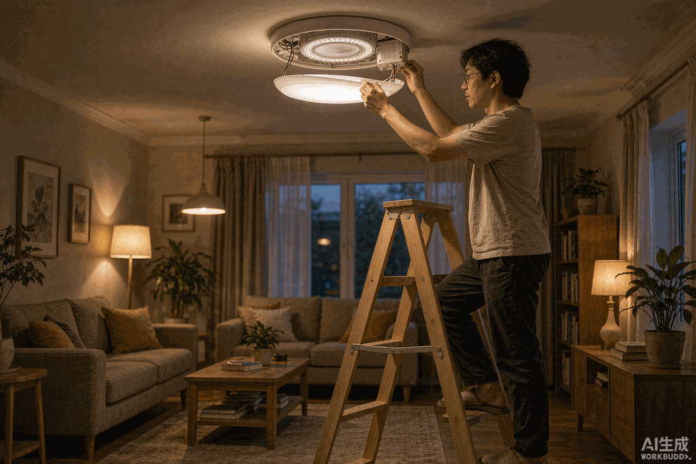
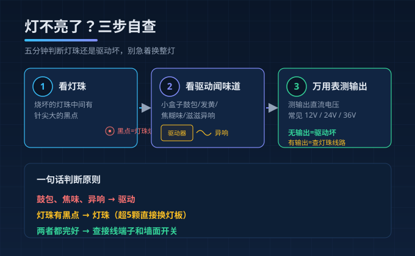
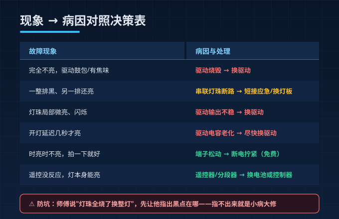
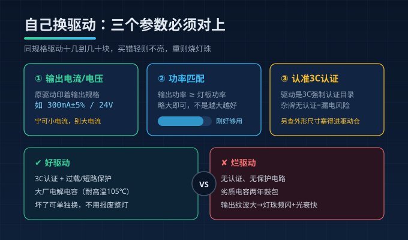

晚上十一点，客厅主灯"啪"一下灭了。你第一反应是灯泡烧了，拧下来一看钨丝好好的；跑去配电箱看，空开也没跳。第二天师傅上门，扫了一眼就说"灯珠烧了，修不了，得换整个灯盘"——报价六百八。
且慢。维修行业里有个公开的秘密：家里灯具"不亮"的故障，七成以上根本不是灯珠的事，而是藏在灯盘背后那个小白方块——LED驱动电源坏了。换个驱动几十到一百多块，换整灯几百上千。差价就在你能不能提前判断出坏的是哪个。

为什么坏的总是驱动
LED灯珠的寿命标称5万小时，但驱动电源里的电解电容是整个灯具里最脆弱的元件：高温环境老化加速、雨季潮湿容易受潮短路、雷雨季节浪涌电压一冲就可能击穿。夏天和梅雨季是灯具故障高峰，报修单里拆开一看，十个里七个是驱动的问题。
简单说：灯珠像灯泡，驱动像心脏，心脏停了，灯珠再新也不亮。
三步自查，五分钟出结论
关掉墙面开关（最好拉掉空开），搬梯子拆开灯罩，做这三个动作：
第一步：看灯珠。 逐颗观察灯板上的LED灯珠，烧坏的灯珠中间有个针尖大的黑点，或者整颗发黄发黑。如果只有一两颗黑点但其他都完好——大概率是灯珠问题，但也有可能只是这一颗短路拉低了整串电压，灯本体没大碍。
第二步：看驱动、闻味道。 找到灯盘背后那个白色或灰色的长方形小盒子，看外壳有没有鼓包、发黄、烧黑的痕迹，凑近闻有没有焦糊味。外观完好就通电瞬间听一下："滋滋"声然后灭掉，或者开灯后外壳烫手，驱动基本可以判死刑。
第三步：万用表测输出（可选）。 有万用表的话，测驱动输出端的直流电压，常见12V/24V/36V，无输出就是驱动坏了；有输出但灯不亮，问题在灯珠或灯板线路。

对号入座：现象→病因对照表
| 故障现象 | 更可能是 | 处理思路 |
|---|---|---|
| 完全不亮，驱动有鼓包/焦味 | 驱动烧毁 | 换驱动 |
| 一整排黑、另一排亮 | 串联灯珠一颗断路 | 短接应急或换灯板 |
| 灯珠局部微亮、闪烁 | 驱动输出不稳 | 换驱动 |
| 开灯延迟几秒才亮 | 驱动电容老化 | 尽快换驱动 |
| 时亮时不亮，拍一下就好 | 接线端子松动 | 断电拧紧接线 |
| 遥控没反应但灯能亮 | 遥控器/分段器 | 换电池或控制器 |
记不住没关系，抓住一个大原则：外观有鼓包、有焦味、有异响→驱动；灯珠有黑点→灯珠；两者都完好→查接线。
看懂这张维修价目表，师傅报价心里有底
不管自己修还是找人修，先知道行情，听到报价离谱就能当场识破：
| 维修项目 | 参考价格 | 备注 |
|---|---|---|
| 上门检测费 | 30~50元 | 继续维修通常可抵扣 |
| 更换LED驱动 | 80~180元 | 含配件，看功率和品牌 |
| 换灯珠（单颗） | 15~30元 | 超过5颗建议换整条灯板 |
| 磁吸替换灯板（自购） | 20~40元 | 动手能力强的自己就能换 |
| 换整套灯盘 | 300~800元 | 只在灯体损坏时才需要 |
最常见的套路就是"小病大修"：驱动坏了说成"灯珠全烧了"，换整灯报价五六百，实际他给你装的是杂牌灯。识破方法：让他指出灯珠烧在哪——灯珠烧坏有肉眼可见的黑点和焦痕，指不出来就是唬你。
自己换驱动，认准这三个参数
网上买同规格驱动十几到几十块，换起来就是接三根线的事。但买之前必须对参数，买错了轻则不亮，重则烧灯珠：
- 输出电流/电压要一致：原驱动上印着输出规格（如 300mA±5% 或 24V），照着买，宁可小电流也别大电流——大电流会加速灯珠光衰；
- 功率匹配：输出功率等于或略大于灯板功率即可，不是越大越好；
- 认准3C认证：驱动是3C强制认证目录产品，杂牌无认证驱动省十几块，漏电和起火风险都在里头。另外注意外形尺寸要塞得进灯盘的驱动仓。

买新灯时，把驱动当验收项
如果你正打算换灯，这篇的结论反过来用：问清楚用的什么驱动、质保多久。驱动是灯具的寿命短板，好驱动（带3C认证、过载保护、电解电容用大厂的）能让整灯多用好几年，坏了也支持单独换驱动，不用整套报废。
灯不亮不可怕，可怕的是花六百八换了一个其实只需要八十块就能修好的灯。动手前先花五分钟，按这三步查一遍。